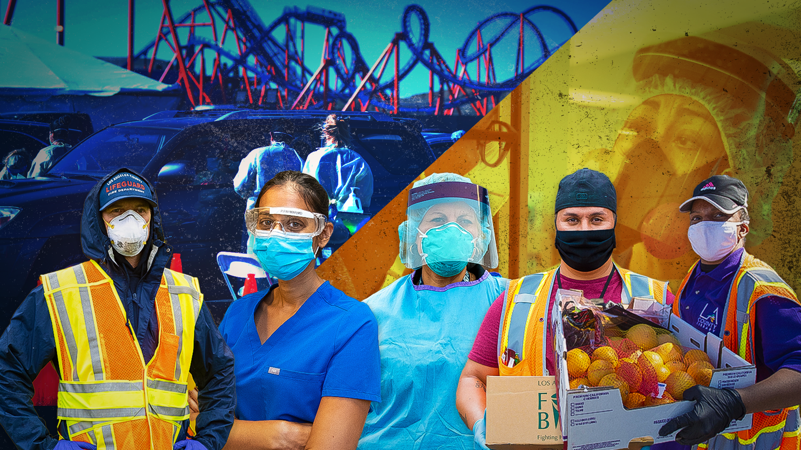

Case Study
COVID-19 LA County Public Health Communications
During the COVID-19 pandemic, the Los Angeles County Department of Public Health faced a communications environment unlike any other. Guidance changed quickly, public concern was high, and community members, employers, schools, healthcare providers, media, and local leaders needed information they could understand, trust, and act on.
The work carried significant stakes. Public health decisions affected millions of residents and required people to make sense of complex data, changing mitigation measures, vaccine information, and practical steps to protect themselves, their families, and their communities. In that environment, communications had to move quickly while remaining accurate, empathetic, and grounded in public trust.
As a Director at Fraser Communications, I served as a strategic communications advisor and agency lead supporting the Department's COVID-19 response. My work included media strategy, crisis communications, community outreach, proactive storytelling, message development, and coordination with public health leaders and subject-matter experts.
The communications challenge was not simply sharing information. It was helping the Department communicate with speed, discipline, and clarity in a fragmented information environment. That meant translating public health data into accessible language, responding to media inquiries and misinformation, supporting outreach across diverse communities and sectors, and helping public health experts communicate with confidence during high-pressure moments.
My role included developing media strategies, press releases, statements, and story angles connected to COVID-19 response, community outreach, and sector guidance. I evaluated incoming media requests, coordinated timely responses from appropriate Department experts, translated complex health information into clearer content for news and social channels, and helped prepare public health leaders for interviews through message guidance and media training.
I built the communications approach around four practical principles. First, make science understandable by connecting public health data to the decisions people were making every day. Second, respond with speed and discipline so delays did not create confusion or allow misinformation to fill the gap. Third, humanize public health expertise by helping experts communicate with empathy and clarity under scrutiny. Fourth, use measurement to improve the response by tracking coverage, social engagement, and other communications signals to identify what was resonating and where additional clarity was needed.
The work helped strengthen the Department's ability to tell clear, data-informed public health stories across earned and social channels. The communications model supported stronger relationships with national, regional, local, and trade media; a more proactive outreach approach; and better preparation for Department experts engaging with media during a prolonged public health emergency.
Results included a 30% increase in top-tier media coverage, more than 50% growth in social media engagement, stronger media relationships, and a more disciplined editorial and performance-tracking process to guide ongoing outreach. Just as important, the work helped public health information feel more understandable and actionable for audiences navigating uncertainty.
This experience shaped how I approach crisis communications and executive counsel. Complex information has to be translated without losing its integrity. Public trust is built through consistency. Communications leaders need to stay close to subject-matter experts and operational decision-makers. Data should inform strategy. And in a public health crisis, empathy is not a soft skill; it is central to helping people hear, understand, and use the information being shared.
Leading communications support for the Los Angeles County Department of Public Health demonstrated my ability to advise senior leaders, translate complex science, manage issues in real time, and build integrated communications strategies that strengthen public understanding and trust.
This personal portfolio case study is presented for professional context only and is not an official Los Angeles County Department of Public Health webpage.